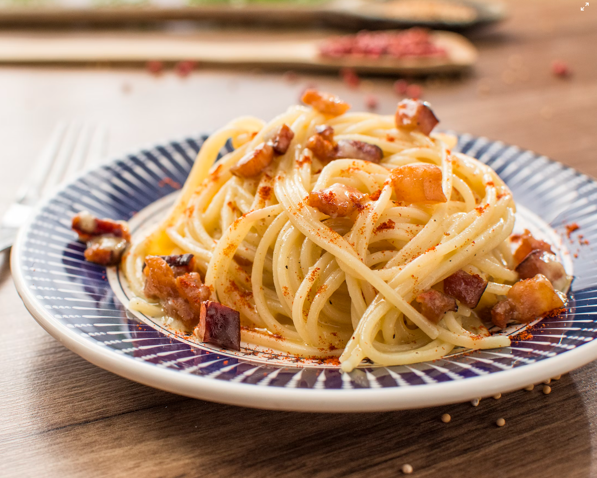

Spaghetti Carbonara

Description
A rich and creamy Italian pasta dish made with eggs, cheese, pancetta, and pepper. Perfect for a quick yet indulgent meal.
No cream needed — just the silky emulsion of cheese, eggs, and pasta water coating each strand beautifully.
Ingredients:
- 200g spaghetti
- 100g pancetta or bacon, diced
- 2 eggs
- 50g grated Parmesan or Pecorino
- Salt & freshly ground black pepper
- 1 clove garlic (optional)
Steps:
- Cook spaghetti in salted water until al dente.
- Fry pancetta until crispy. (Add garlic if using, then discard)
- Beat eggs with cheese and a generous amount of pepper.
- Combine pasta with pancetta, remove from heat.
- Stir in egg mixture quickly to avoid scrambling.
- Add a splash of pasta water if needed. Serve immediately.